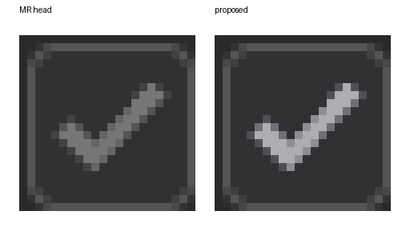

Status: first milestone, stop point. One confirmed regression, one minimal proposed fix. No upstream push or comment.
Baseline: before 29b0a0b2256eb5ed27df6ec5e4e4e33142a717e8; MR !16166 head fe4adb4f942385912bb3244b570afa475cadf3bd.
refs/merge-requests/16166/head resolved to fe4adb4... at review time. The cached after ref matched it. The historical inventory reproduced: 194 before, 74 after, 204 rows, 77 unresolved, 63 relocated, 54 candidate replacements, 10 after-side unmatched.
Scope: checkmark family only (13 original assets, 4 after-side assets, 1 proposed asset). The other 181 original assets are not reconciled in this milestone.
| Original | Disposition | Replacement / evidence |
|---|---|---|
migration/media/icons/form/checked.svg |
Relocated without modification | images/icons/check.svg — SHA-256 a51b10ca... in both revisions. Backs --admin-icon-check, -checked, -checkmark. |
migration/media/icons/form/toggle-unchecked.svg |
Relocated without modification | images/icons/toggle-unchecked.svg — SHA-256 213e711a... in both revisions. |
migration/media/icons/action-link/checkmark.svg |
Replaced (intentional redesign) | images/icons/check.svg. Stroked polyline becomes filled canonical check; still monochrome, non-directional, mask-rendered. |
images/icons/ffffff/checkmark-sm.svg |
Replaced (derived pretint) | images/icons/pretint/check-inverse.svg (#ffffff). Same white role, new 24×24 canonical geometry. |
images/icons/82828c/checkmark.svg |
Replaced (derived pretint) | images/icons/pretint/check-disabled.svg (#767676). Checked+disabled checkbox, light mode. |
images/icons/002e9a/checkmark.svg and 6 other colour variants, plus ffffff/checkmark.svg |
Confirmed unused and removed | No exact path reference anywhere in core at the before revision; the only basename references point to action-link/checkmark.svg and 82828c/checkmark.svg. No dynamic images/icons/<hex>/checkmark*.svg construction was found. Absence of a reference is not proof that third-party or user configuration never used the file. |
All before/after checkmark files, source references and confidence are in reconciliation.json and reconciliation.md.
CHK-001 — dark-mode disabled checked checkbox check loses contrast.
#82828c on the dark disabled surface #313134 = 3.41:1.#767676 on #313134 = 2.85:1.#82828c on #eaeaea 3.16:1 → #767676 3.78:1.The MR replaced the unused colour variants correctly, but the single disabled-check asset was aligned to gray-700 without a dark-mode counterpart. The checked state remains present but is markedly less distinguishable in dark mode. Disabled controls are exempt from WCAG 2.2 SC 1.4.11; this is reported as a measurable state-visibility regression, not a WCAG failure claim.

images/icons/pretint/check-disabled-inverse.svg — same path data as check.svg, fill #adaeb3 (--admin-color-gray-400, the dark disabled foreground token).--admin-icon-checked-disabled-inverse in css/base/icons.pcss.css and the compiled icons.css..form-boolean--type-checkbox[disabled]:checked; light mode keeps check-disabled.svg unchanged.proposed/tests/checkmark_regression.py (6 stdlib tests: asset validity, geometry parity, token registration, compiled data-URI parity, dark rule, contrast).proposed/interdiff-checkmark.patch (verified with git apply --check).Measured result: #adaeb3 on #313134 = 5.85:1. Light mode remains 3.78:1. Forced-colours screenshots are identical to MR head (the checkbox uses native appearance under forced colours).
pretint/check-disabled-inverse.svg and register --admin-icon-checked-disabled-inverse (asset + registry).proposed/tests/checkmark_regression.py and the evidence reports (lab only; not part of the Drupal patch).proposed/interdiff-checkmark.patch contains the Drupal theme changes only and applies to the MR head with git apply -p1. The test and reports live under proposed/ in the review lab.
.form-boolean--type-checkbox.:focus-visible true, 1px outline, offset 2px; light rgb(0,95,204), dark rgb(153,200,255).[4,87,17,99] in a 416×184 screenshot — only the disabled checkbox changed. Light after vs proposed: no difference.#015efe = 5.21:1 (light); black on #c4d1ff = 13.91:1 (dark).proposed/reports/screens/.Tested on the running Drupal Core Lab site at https://repro-baseline-main.ddev.site/admin/people/permissions (Drupal 12-dev d29add7e), where the Administrator column renders 91 checked and disabled checkboxes. The MR-head check assets and component CSS were applied to the lab's baseline default_admin theme, caches rebuilt, measured, then the proposed fix was added and measured again. The baseline theme was restored exactly afterwards (directory diff empty).
| State | Background | Check | Contrast |
|---|---|---|---|
| MR head, light | rgb(234,234,234) |
#767676 |
3.78:1 |
| MR head, dark | rgb(49,49,52) |
#767676 |
2.85:1 |
| Proposed, light | rgb(234,234,234) |
#767676 |
3.78:1 |
| Proposed, dark | rgb(49,49,52) |
#adaeb3 |
5.85:1 |
The live Drupal measurements match the isolated harness exactly. The affected control is 21x21 CSS px. Forced light and forced dark retain the native checkbox appearance and the checked state remains visible (appearance: auto).
Screenshots: screens/live-mr-light-disabled.png, screens/live-mr-dark-disabled.png, screens/live-proposed-light-disabled.png, screens/live-proposed-dark-disabled.png, screens/live-proposed-forced-light-disabled.png, screens/live-proposed-forced-dark-disabled.png, screens/live-mr-dark-row.png, screens/live-proposed-dark-row.png.
viewBox="0 0 24 24", no external content, path data identical to check.svg, fill #adaeb3.d, fill).d29add7e; the MR head is fe4adb4. Full-theme integration remains to be verified.# Snapshot and MR verification
git --git-dir=drupal.git rev-parse refs/heads/before refs/heads/after
git ls-remote https://git.drupalcode.org/project/drupal.git refs/merge-requests/16166/head
# Static checks and tests
python3 proposed/tests/checkmark_regression.py
git apply --check -p1 proposed/interdiff-checkmark.patch
# Lab inventory of the proposed tree (run in a temporary directory)
python3 review.py --before before/core/themes/default_admin \
--after proposed/core/themes/default_admin